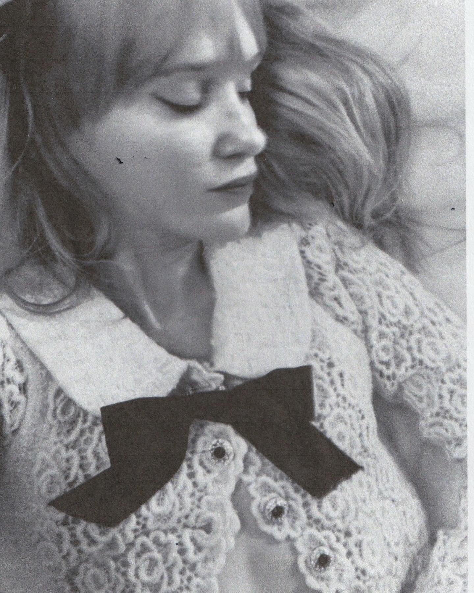

no image

░▒▓███████▓▒░░▒▓█▓▒░ ░▒▓██████▓▒░ ░▒▓██████▓▒░
░▒▓█▓▒░░▒▓█▓▒░▒▓█▓▒░ ░▒▓█▓▒░░▒▓█▓▒░▒▓█▓▒░░▒▓█▓▒░
░▒▓█▓▒░░▒▓█▓▒░▒▓█▓▒░ ░▒▓█▓▒░░▒▓█▓▒░▒▓█▓▒░
░▒▓███████▓▒░░▒▓█▓▒░ ░▒▓█▓▒░░▒▓█▓▒░▒▓█▓▒▒▓███▓▒░
░▒▓█▓▒░░▒▓█▓▒░▒▓█▓▒░ ░▒▓█▓▒░░▒▓█▓▒░▒▓█▓▒░░▒▓█▓▒░
░▒▓█▓▒░░▒▓█▓▒░▒▓█▓▒░ ░▒▓█▓▒░░▒▓█▓▒░▒▓█▓▒░░▒▓█▓▒░
░▒▓███████▓▒░░▒▓████████▓▒░▒▓██████▓▒░ ░▒▓██████▓▒░
this is my style diary with words and inspiration mixed in. for all of the clothing i've made, please see your eyes only.
interactive section
maybe questions that people can answer?